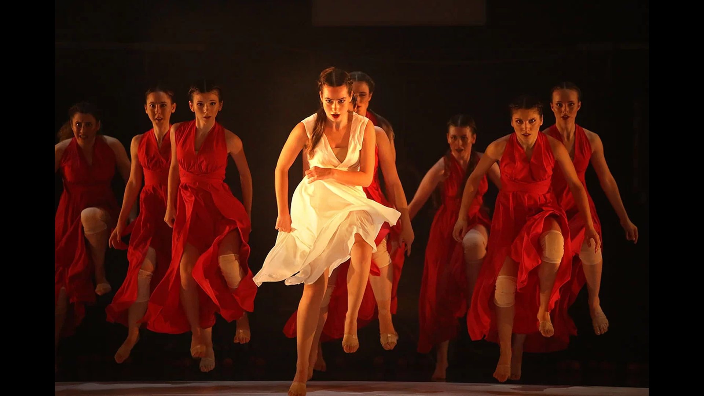
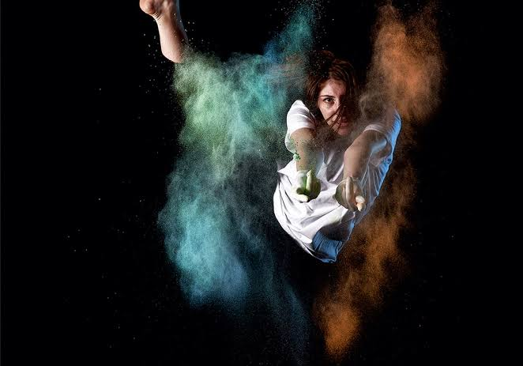

Teatru-dans · din 1993 · Sibiu
Corpul
devine limbaj.
Microbis este Compania de Teatru-Dans a Casei de Cultură a Studenților Sibiu — treizeci și trei de ani în care generații de tineri pasionați de dans și teatru au transformat mișcarea, muzica live și teatralitatea într-un limbaj scenic propriu.
Pe scenă acum
Regina Margot trailer · 30–31 octombrie 2026
Creat în 2009, „Regina Margot” revine sub forma unui trailer prezentat în cadrul Festivalului de Dans „Hugo Wolff”, la Sibiu, pe 30–31 octombrie 2026. Un spectacol de teatru-dans cu dramaturgie circulară, care începe și se încheie cu noaptea Sfântului Bartolomeu.
Vezi spectacolul
Moștenirea vie
Sibiul devine, an de an, capitala dansului studențesc
Din 2024, Casa de Cultură a Studenților Sibiu organizează Festivalul de Dans „Hugo Wolff" — un omagiu adus fondatorului Microbis și, în același timp, o platformă anuală pentru trupele de dans studențești din toată țara. Microbis deschide festivalul, ca formație-gazdă, în fiecare ediție.
Povestea lui Hugo WolffPovestea
O familie artistică
în continuă evoluție.
Microbis nu e doar o Companie de Teatru-Dans — e treizeci de ani de generații de tineri pasionați de dans și teatru care s-au succedat pe aceeași scenă, sub aceeași idee: că mișcarea poate spune ce cuvintele nu ajung să spună.
Identitate
Teatru, dans și muzică live, într-un singur limbaj
Microbis este Compania de Teatru-Dans a Casei de Cultură a Studenților Sibiu — o formulă artistică ce îmbină tehnica dansului contemporan cu teatralitatea și cu muzica interpretată live pe scenă, nu din fonograme. Spectacolele companiei nu ilustrează povești, ci construiesc universuri: ritualuri, stări, cicluri — vinovăție, luciditate, eliberare, trecerea timpului.
Particularitatea care a ținut compania vie treizeci de ani: distribuția e formată din tineri pasionați de dans și teatru. Fiecare generație care trece prin Microbis aduce o energie nouă, dar moștenește aceeași disciplină și aceeași căutare de autenticitate transmisă de la înființare.
Istoric
Treizeci și trei de ani, pe scurt
Hugo Wolff începe dansul la Școala Populară de Artă din Sibiu, sub îndrumarea profesoarei Ibolya Cristea.
Wolff înființează Microbis — prima formație de dans modern și contemporan din Sibiu, care s-a transformat ulterior în Compania de Teatru-Dans Microbis. „În 1993 nu exista în Sibiu nicio trupă sau formație de dans modern și contemporan", avea să povestească ulterior.
Debutul companiei: două medalii de aur la un festival-concurs de dans desfășurat la Cluj-Napoca.
Recunoaștere internațională la Carnavalul din Leskovac, Serbia.
Diplomă pentru cea mai bună scenografie la Galele Teatrului Studențesc „În lumea Thaliei”, ediția a VII-a, Ploiești.
Compania marchează 30 de ani de activitate prin spectacolul-testament „Tinerețe fără bătrânețe". La scurt timp, Hugo Wolff moare subit — ultima sa coregrafie pentru Microbis rămâne, retrospectiv, propriul lui testament artistic.
O nouă generație preia compania. CCS Sibiu lansează Festivalul de Dans „Hugo Wolff", cu Microbis ca formație-gazdă. Compania prezintă „Clipe de luciditate" la Festivalul Național Studențesc „Serbările Unirii" (Alba Iulia) și premiera „Ritual și Mere Roșii" la ediția a doua a festivalului omonim.
Fondatorul
Hugo Wolff — „părintele dansului modern sibian"
Coregraf și fondator al companiei Microbis, Hugo Wolff a condus-o neîntrerupt timp de trei decenii, semnând, în tot acest timp, întregul ei repertoriu. În paralel, a dus o carieră proprie de coregraf, colaborând peste douăzeci de ani cu Teatrul „Tony Bulandra" din Târgoviște — Hamlet, Romeo și Julieta, Carmen, Livada de vișini — și a coregrafiat spectacole stradale pentru Festivalul Internațional de Teatru de la Sibiu între 2003 și 2008. În 2012 a primit titlul de „Best Choreographer" în Turcia, pentru Hamlet.
Hugo Wolff a murit subit în noaptea de 27 spre 28 august 2023, la scurt timp după ce compania sa aniversase 30 de ani de activitate. Comunitatea culturală sibiană i-a purtat doliul public.
„A fost mult mai mult decât un coregraf talentat — a fost un prieten, un mentor și o sursă inepuizabilă de inspirație." Casa de Cultură a Studenților Sibiu
În cuvintele lui Hugo Wolff
„Pentru mine dansul înseamnă o continuă căutare.”
Pentru mine dansul înseamnă o continuă căutare. Viața de zi cu zi a oamenilor de pretutindeni, cu toate aspectele ei, uneori banale, alteori extraordinare, rădăcinile, tradițiile și aspirațiile acestor oameni, toate acestea îmi răscolesc imaginația și-mi creează o senzație de neastâmpăr continuu. Prin dans încerc să-mi salvez libertatea de spirit. Dansul este o necesitate instinctivă, extraconștientă, este o formă de gândire, este o funcție tot atât de vitală ca și respirația.
Dansul gândit de mine îmbină toate pornirile, fie ele contradictorii sau complementare: dragostea, neliniștea, nostalgia, descumpănirea, încrederea – dar și lipsa de încredere, siguranța și nesiguranța, orgoliul, scârba, oboseala, umilința. Toate acestea mă îndeamnă să concep un nou dans, să gândesc un alt mod de exprimare.
Cu fiecare dans creat mă redescopăr. Un dans imaginat devine „viu” și real ca o ființă care odată născută va deveni tributară unui domeniu deja exploatat. Odată ce dansul prinde contur, realizez că acesta cerea să se nască, pentru că are destinul său. Eu am deschis doar poarta acestei „ființe” care trebuia să se nască, să se dezvolte și să trăiască.
Rădăcinile dansului imaginat de mine sunt adânc înfipte în realitatea fundamentală care este viața resimțită în chip diferit. De aceea, am și imprimat companiei mele o anume elasticitate în abordarea diferitelor dansuri. Astfel, am reușit să includem în registrul larg al dansului modern și contemporan creații total diferite ca gen, pornind de la stilizările pe teme ritualice românești și mergând până la dansul cu tentă orientală, dansul-teatru și chiar dansul-simbol de avangardă. Aceasta nu înseamnă că formația nu are un stil propriu. Dimpotrivă, stilul nostru se regăsește în tot ceea ce facem, însă mereu sub altă formă.
Hugo Wolff — coregraf, fondatorul Companiei Microbis
Instituția-mamă
Casa de Cultură a Studenților Sibiu
Microbis funcționează sub Casa de Cultură a Studenților (CCS) Sibiu, instituție publică de cultură înființată în același moment istoric — practic anul de naștere al companiei. Alături de Microbis, CCS Sibiu găzduiește și alte formații artistice studențești, de la Ansamblul Folcloric „Ardealul" la trupe de street dance.
Vizitează casastudentilorsibiu.ro„Pasiunea este forța care dă putere, iar Microbis a avut forța necesară să mențină un trend ascendent în toți acești ani.”
Dr. ing. Liliana Georgeta Popescu, director, Casa de Cultură a Studenților Sibiu
Din prefața albumului Companiei Microbis
Există un moment când simțim nevoia să ne oprim în loc și să privim în urma noastră, răsfoind printre amintiri – fotografii, afișe, cronici, înregistrări video.
Parcă a fost ieri… Și totuși au trecut 20 de ani de când un grup de studenți entuziaști de la Facultatea de Inginerie au decis că vor să-și petreacă timpul liber într-un mod plăcut și creativ, prin crearea unei formații studențești de dans.
E drept că majoritatea făcuserăm dansuri, inclusiv balet sau gimnastică, ceea ce a imprimat grupului o anumită disciplină și un anumit ritm de muncă, încă de la început. „Lansarea pe piața artistică studențească” a noului „produs” MICROBIS a fost agresivă, în sensul bun al cuvântului, iar diplomele și premiile nu au încetat să-i fie decernate.
Această lume veșnic tânără, energică, entuziastă continuă să existe, cu alte chipuri, dar cu aceleași idealuri și speranțe. Să nu uităm însă că în viață există o logică a vârstelor care dictează preferințe, ritmuri, temperamente ce nu sunt niciodată identice. De la coregrafii preponderent aparținătoare stilului modern s-a ajuns la baletul modern și chiar la teatru-dans.
Pasiunea este forța care dă putere, iar Microbis a avut forța necesară să mențină un trend ascendent în toți acești ani. De altfel, unul din secretele succesului Companiei Microbis a fost și este coeziunea și consecvența echipei, a membrilor săi, induse bineînțeles de fondatorul și coregraful companiei – Hugo Wolff.
Cu toată efemeritatea lui, actul artistic nu poate avea loc fără speranța rămânerii în amintirea privitorilor. Vă invităm să parcurgeți paginile albumului, încet, poposind câteva secunde la fiecare pagină, la fiecare poveste sau fotografie. În spatele acestora se regăsesc sentimente, uneori povești întregi.
Dr. ing. Liliana Georgeta Popescu — director, Casa de Cultură a Studenților Sibiu
„Un dansator și balerin de o ținută și frumusețe aparte, un coregraf inspirat, care a unit generații de tineri în jurul ideii de frumos." Constantin Chiriac, director Teatrul Național „Radu Stanca" Sibiu — despre Hugo Wolff, fondatorul MicrobisCitește presa
Recrutare
Iubești dansul și teatrul?
Microbis se reînnoiește în fiecare an cu tineri pasionați de dans și teatru, dornici să spună ceva prin mișcare. Nu ai nevoie de experiență de scenă — ai nevoie de curaj.
Vezi condițiile de audiție